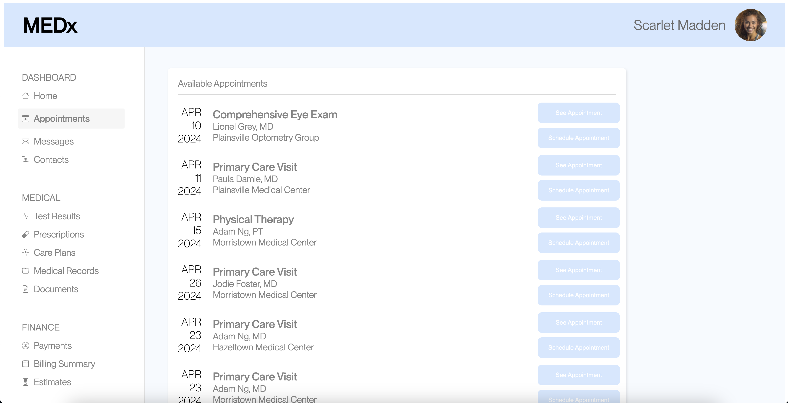
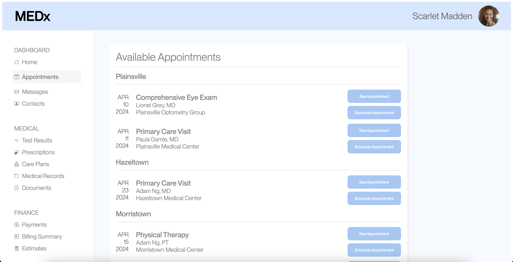

A/B Testing
Analyzing the Efficacy of UI Updates
During this project, students were given an appointment scheduling interface (
This project utilized A/B testing techniques to analyze how the user experience changed from
Redesigned Interface
Below are the original (
Version A
Version B
The change I primarily focused on was an intuitive ordering of appointments.
In
In

Quanitfying Changes in UX
What metrics can we use to quanity the user experience and how it might change?
Throughout this project, I focused on 3 primary metrics:
1.
How many users misclicked?
2.
How long did users take to find the right button?
3.
How long did users take to click on any button?
1. Misclick Rate
How many users clicked a different button on the page before finding the correct button for the task?
There is
The rate at which Ver B users misclicked is
I predicted that the collected data would support the alternative hypothesis, because the changes made for Ver B hopefully clarified page navigation, decreasing the chance that someone clicks on a wrong button.
2. Time Spent on Page
Time spent on the webpage for each user group
The time spent on the page was measured as the milliseconds from start until the user clicked the button for the appropriate appointment.
There is
The time users spent on Ver B is
I predicted that the collected data will support the alternative hypothesis, because the changes for Ver B hopefully made page navigation easier, allowing users to find the correct appointment faster.
3. Time Until First Click
This will be defined as the time before the user's first click. I thought this would be meaningful to observe because the time until first click might be correlated with the users' confidence in their ability to complete their task.
There is
The time before a Ver B user's first click is
I predicted that the collected data will support the alternative hypothesis. I thought that the changes I made for Ver B would both make button interaction more intuitive and make finding the relevant appointment faster.
Data & Analysis
1. Misclick Rate
The data for this experiment is categorical, with each user for each version being categorized as TRUE (did misclick), or FALSE (did not misclick).
I used the Chi-Square Test to determine the probability of the TRUE/FALSE distribution of Version A users and Version B users being the same.
0.000796
| TRUE | FALSE | |
|---|---|---|
| Ver A | 9 | 7 |
| Ver B | 0 | 14 |
Casually, it could be said that Version B users had different misclick behavior than Version A users, as over half of Version A users misclicked, compared to 0 Version B users.
The data seems to reject the Null Hypothesis that the misclick rate of Version A and B users is the same, as indicated by the low Chi Square p-value.
I think that Version B users were less likely to misclick due to the improved ordering and separation of appointment slots which made it easier to find the correct button.
However, it is important to consider potential sampling bias as discussed later.
2. Time Spent on Page
29,411.25 ms
341,951,899.90 ms
10,626.21 ms
10,394,333.72 ms
0.00052
On first glance, it can be said that users spent about half as long booking an appointment on Version B when compared to Version A.
Moreover, a very low p value from the 1-sided T Test indicates that users, on average, likely spent less time booking an appointment on Version B as compared to Version A.
I believe this may have been influenced by the improvements to the appointment-finding process. Moreover, the more intuitive button color changes on hover also may have helped users figure out how to interact with the buttons a little faster.
3. Time Until First Click
10,452.56 ms
27,388,063.33 ms
6,940.57 ms
8,193,838.57 ms
0.0147
Again, casually examined, it looks like Version B users were, on average, faster to make their first click on a button when compared to Version A users. This lines up with our Alternative Hypothesis for this data.
Taking a closer look, the low 1-sided T Test p-value seems to suppor tthat Version B users were likely faster to make a first click.
I think the improved button interaction affordance helped contribute to users being more confident in how to interact with any button on the page.
Conclusions
Ultimately, Version B users seemed to be able to book their appointment faster, with more confidence, and with less mistakes.
To this end, the changes made for Version B like aided in bringing about this effect.
However, it is also important to note some confounding factors as well. For instance, Ver A users were new to the task, while Ver B users had several experiences in completing similar tasks before performing my task. Thus, it is possible that the observed differences in UX are actually a consequence of users remembering the task rather than Ver B making notable UX improvements.